Week 10: Statistical testing
STA238: Probability, Statistics, and Data Analysis II
Michael Jongho Moon
March 12, 2026
Example: The case of Robert Swain
Example: The case of Robert Swain
In 1962 Alabama, a black male named Robert Swain was convicted and sentenced to death. Swain appealed to the U.S. Supreme Court stating that the jury selection for the County’s trials was unfair.
- 26% of men eligible to service on juries were black (women weren’t eligible at that time).
- Only 8 among the panel of 100 men were black; none of them were among the final jurors.
- The U.S. Supreme Court concluded, “the overall percentage disparity has been small.”
- If the panelists were selected at random, we may not end up with 26 out of 100 every time.
- But how likely is it to end up with only 8?
Example: The case of Robert Swain
Question
Did the court truely select the jury panel randomly?
Did the court invite black men to the jury panel with the same probability as white men?
Example: The case of Robert Swain
Hypotheses
\[H_0:p=0.26\quad\text{vs}\quad H_1:p\neq0.26\]
where \(p\) is the probability that a jury panel member is black. We can model the sections as \(X_1,\ldots,X_{100} \overset{\text{iid}}\sim \text{Ber}(p)\).
Swain’s appeal claimed the court intentionally selected less black candidates in the panel selection process. This suggests a one-sided test. But, we can conduct a two-sided test and decide on the direction based on the data.
Example: The case of Robert Swain
Test statistic
\[T=\frac{\widehat{p}-p_0}{\sqrt{p_0(1-p_0)/n}}\]
where \(\widehat{p}=\cfrac{\sum_{i=1}^{100}X_i}{100}\).
Example: The case of Robert Swain
- The observed test statistic value is -4.1.
- The p-value is close to 0 (0.00002).
- Do you agree with the U.S. Supreme Court?
Test statistics for the mean
Mean of a quantity, \(\mu\)
Mean proportion, \(p\)
Known \(\text{Var}(X_1)=\sigma^2\)
\[T=\frac{\overline{X}_n-\mu_0}{\sigma\left/\sqrt{n}\right.}\]
\[T=\frac{\widehat{p}_n-p_0}{\sqrt{p_0(1-p_0)\left/n\right.}}\]
Unknown \(\text{Var}(X_1)\)
\[T=\frac{\overline{X}_n-\mu_0}{S_n\left/\sqrt{n}\right.}\]
The null hypothesis assumes \(\text{Var}(X_1)=p_0(1-p_0)\).
All test statistics are specified under the assumption the null hypothesis is true.
The sampling distribution of the test statistics under the null hypothesis is called the null distribution.
Null distribution of \(T\) for the mean
\(X_1\) follows a normal distribution
Known \(\sigma^2\)
\[T\sim N(0,1)\]
Unknown \(\sigma^2\)
\[T\sim \text{__________}\]
\(X_1\) does not follow a normal distribution
Cannot apply the CLT
\[T\dot\sim F^*\]
(Use bootstrapping)
Can apply the CLT
\[T\dot\sim N(0,1)\]
Use the null distribution to compute the associated \(p\)-value given the data.
- What can we assume about the underlying distribution?
Is it normal? Is it Bernoulli? Is it highly skewed?
Can we assume a fixed value for the variance?
- Do we have enough data to apply the CLT?
Example: The case of Robert Swain
- We had strong evidence against the null hypothesis with a \(p\)-value close to 0 (0.00002).
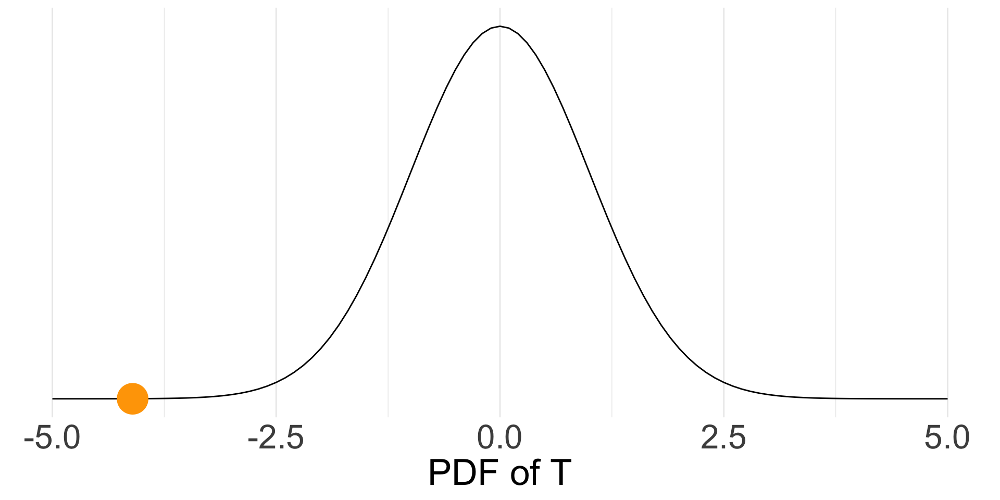
Caution when using the \(p\)-values
A small \(p\)-value does not indicate an important departure from the null hypothesis in the context of the data. The “practical importance” of the result must be considered.
A \(p\)-value only provides evidence against \(H_0\). It does NOT provide an indication of the direction or the magnitude of the alternative.
e.g., If you observe a sample mean of 85.1 with a \(p\)-value of 0.04, a hypothesis test at significance level 0.05 would reject \(H_0:\mu=85\). However, it may be less meaningful in comparison to a result with a sample mean of 90 with a \(p\)-value of 0.051.
Caution when using the \(p\)-values
Use caution when imposing binary thinking on continuous world; a binary conclusion, reject vs. not reject, hides much of the detail.
For good science, \(p\)-values should be used in conjunction with other tools and with consideration for the context.
A rough guideline on intepreting the strength of evidence
| \(p\)-value | Interpretation |
|---|---|
| \(p>0.10\) | No evidence against \(H_0\). |
| \(0.05<p<0.10\) | Weak evidence against \(H_0\). |
| \(0.01<p<0.05\) | Moderate evidence against \(H_0\). |
| \(0.001<p<0.01\) | Strong evidence against \(H_0\). |
| \(p<0.001\) | Very strong evidence against \(H_0\). |
Example: SAT scores
So, what is our conclusion?
Hypotheses
\(H_0: \mu=1000\)
\(H_1: \mu\neq1000\)
Test statistic
\[T=\frac{\overline{X}_n - \mu}{\sigma\left/\sqrt{n}\right.}\]
\[\overline{x}_{50}= 1057.2\]
\[t_\text{obs} = \cfrac{ 1057.2 - 1000}{230 / \sqrt{50}} = 1.8\]
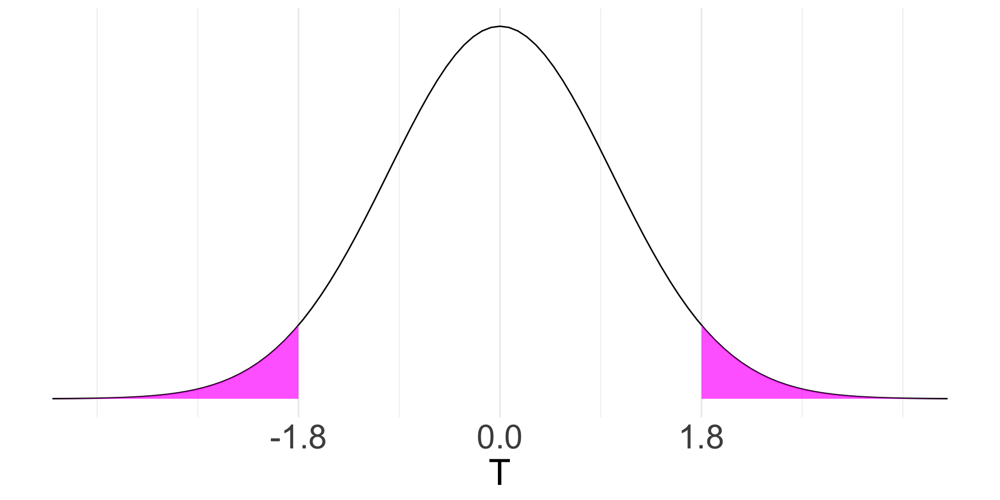
\[p\text{-value}=P(|T|\ge |t_\text{obs}| | H_0)= 0.072\]
Decision making using the \(p\)-value
- The purpose of a hypothesis test is to choose between two contradictory claims.
- To conclude whether the \(p\)-value is small enough to reject \(H_0\), we need a threshold.
- Such threshold is pre-specified and is called significance level.
- The procedure is called a significance test.

Significance level
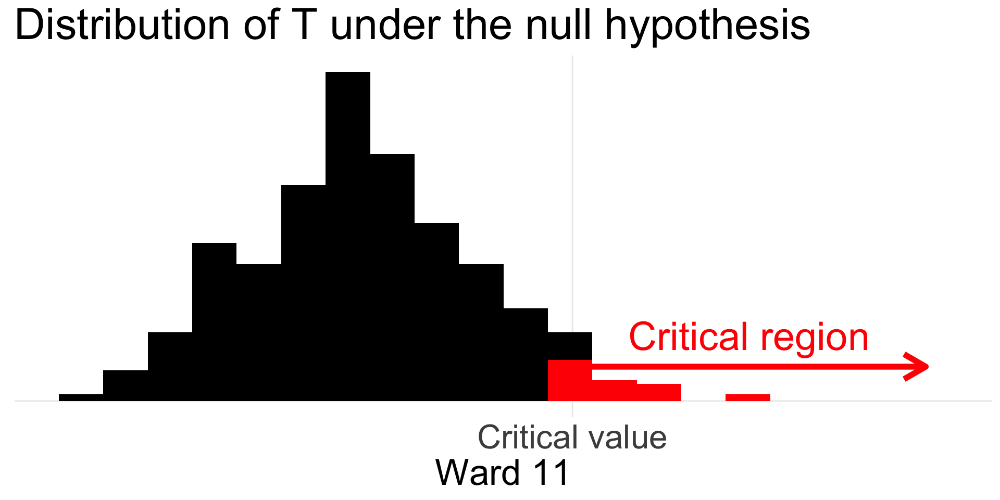
The significance level is the largest acceptable probability of rejecting the null hypothesis erroneously when the null hypothesis is true. We denote often significance level with \(\alpha,\) where \(0<\alpha<1\).
Critical region and critical values

Suppose we test \(H_0\) against \(H_1\) at significance level \(\alpha\) by means of a test statistic \(T\). The set \(K\subset \mathbb{R}\) that corresponds to all values of \(T\) for which we reject \(H_0\) in favour of \(H_1\) is called the critical region or rejection region. Values on the boundary of the critical region are called critical values.
The set of all values of \(T\) for which we fail to reject \(H_0\) is called the acceptance region.
Example: SAT scores
Consider the SAT score example.
\(H_0:\mu=1000\) against \(H_1:\mu\neq1000\) knowing \(\sigma=230\) with
\[T=\cfrac{\overline{X}_n-\mu_0}{\sigma/\sqrt{n}}\sim N(0,1)\]
Suppose we want to conduct a significance test at \(\alpha = 0.1\).
What are the critical values? What about the critical region?
Example: SAT scores
Consider the SAT score example.
\(H_0:\mu=1000\) against \(H_1:\mu\neq1000\) knowing \(\sigma=230\) with
\[T=\cfrac{\overline{X}_n-\mu_0}{\sigma\left/\sqrt{n}\right.}\sim N(0,1)\]
Suppose we want to conduct a significance test at \(\alpha = 0.1\).
What are the critical values? What about the critical region?
\[\pm z_{\alpha/2}=\pm1.645\]
\[(-\infty, -1.645] \cup [1.645, \infty)\]
We reject \(H_0\) when the observed \(p\)-value is smaller than the significance level \(\alpha\).
Example: Coffee sales
Michael’s coffee shop’s typical daily sales amount was $1,200 last spring. At the beginning of the year, the City installed a bike lane in front of his shop and Michael is wondering whether the daily sales amount has changed.
Following are numerical summaries of daily sales amount from the past 36 days. Assume they are from a random sample
| \(\overline{X}_n\) | \(s_n\) |
|---|---|
| 1251.39 | 199.46 |
Hypotheses
Test statistic
Example: Coffee sales
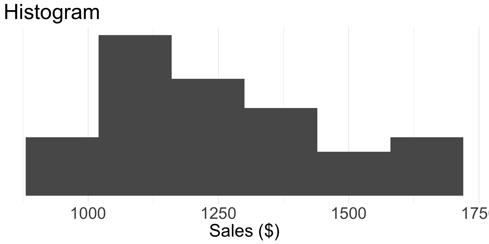
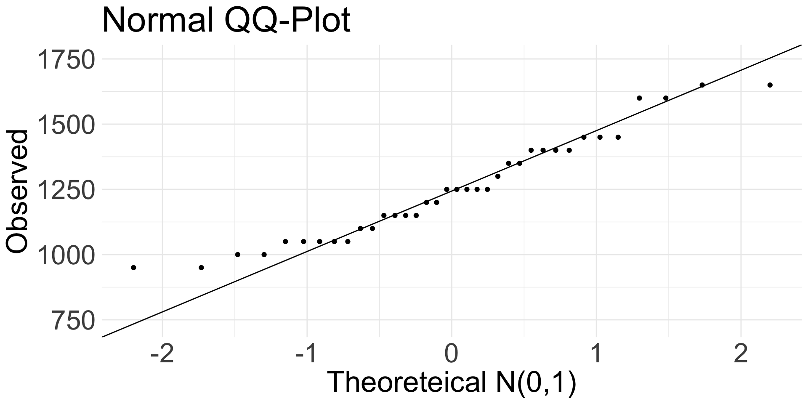
Example: Coffee sales
Let \(\mu\) be the mean daily sales amount this spring.
Hypotheses
\[H_0:\mu = 1200\] \[H_1:\mu \neq 1200\]
Test statistic
\[T=\cfrac{\overline{X}_{36} - \mu_0}{s_{36} \left/\sqrt{36}\right.}\]
Conclude the significance test at \(\alpha = 0.1\).
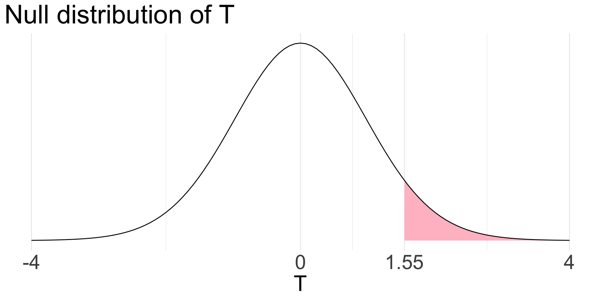
\[t_\text{obs}= 1.55\]
Example: Coffee sales
Siginificance and confidence
Significance test
Reject \(H_0\) when
\[t=\frac{\overline{x}_n-\mu_0}{\sigma\left/\sqrt{n}\right.} \in (-\infty, z_{1-\alpha/2}] \cup [z_{\alpha/2}, \infty)\]
Confidence interval
Confident that
\[\mu \in\left(\overline{x}_n-z_{\alpha/2}\frac{\sigma}{\sqrt{n}}, \overline{x}_n-z_{1-\alpha/2}\frac{\sigma}{\sqrt{n}}\right)\]
Siginificance and confidence
Significance test
Reject \(H_0\) when
\[t=\frac{\overline{x}_n-\mu_0}{\sigma\left/\sqrt{n}\right.} \in (-\infty, z_{1-\alpha/2}] \cup [z_{\alpha/2}, \infty)\]
Confidence interval
Confident that
\[\mu \in\left(\overline{x}_n-z_{\alpha/2}\frac{\sigma}{\sqrt{n}}, \overline{x}_n-z_{1-\alpha/2}\frac{\sigma}{\sqrt{n}}\right)\]
\[{\overline{x}_n-\mu} \in\left(z_{1-\alpha/2}\frac{\sigma}{\sqrt{n}}, z_{\alpha/2}\frac{\sigma}{\sqrt{n}}\right)\]
\[\frac{\overline{x}_n-\mu}{\sigma\left/\sqrt{n}\right.} \in\left(z_{1-\alpha/2}, z_{\alpha/2}\right)\]
We can reject \(H_0\) at \(\alpha\) significance
when the parameter value under the null
is outside the \(100\cdot(1-\alpha)\)% confidence interval.
Siginificance and confidence
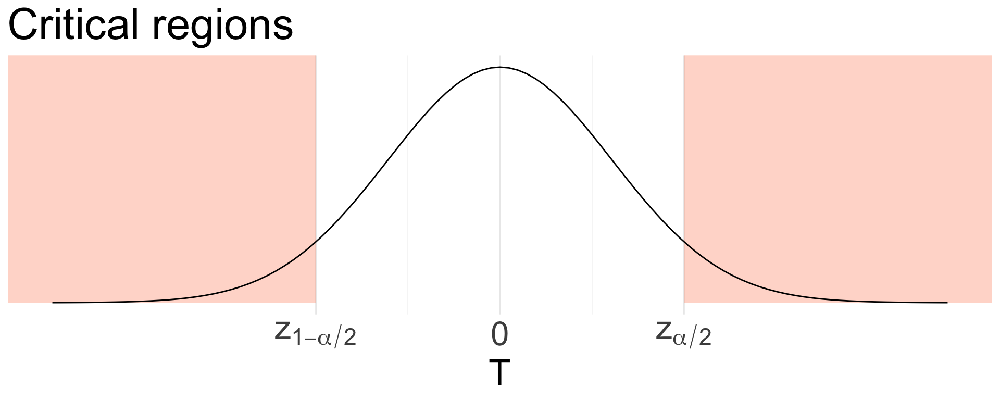
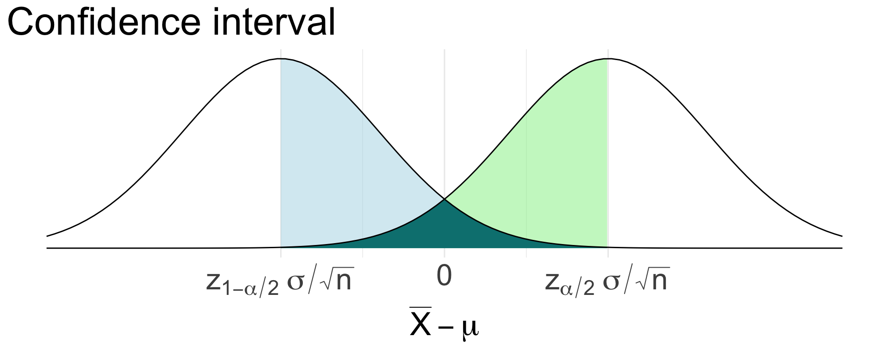
See Section 26.5 for a discussion on the relationship between critical regions and confidence intervals.
Example: SAT scores
Consider the SAT score example.
\(H_0:\mu=1000\) against \(H_1:\mu\neq1000\) knowing \(\sigma=230\).
Suppose we want to conduct a significance test at \(\alpha = 0.1\).
Construct the \(100(1-\alpha)\)% confidence interval and conclude using the interval.
\[\overline{x}_{50}= 1057.2\]
\[\pm z_{\alpha/2}=\pm1.645\]
Exercises
For the the case of Robert Swain example,
- construct a 99% confidence interval;
- compute the \(p\)-value; and
- conduct a significance test at \(\alpha=0.01\) using both.
Do not use an estimated value of the population variance when constructing the confidence interval. That is, do not use \(\widehat{p}\) when computing the standard error.
What can go wrong?

Recall

n <- 25
J <- 50
alpha <- 0.1
t_crit <- qt(alpha / 2, n - 1)
x_bars <- numeric(J)
lwr <- numeric(J) # lower bound
upr <- numeric(J) # upper bound
for (j in seq(J)) {
x_j <- rnorm(n)
x_bars[j] <- mean(x_j)
lwr[j] <- x_bars[j] + t_crit * sd(x_j) / sqrt(n)
upr[j] <- x_bars[j] - t_crit * sd(x_j) / sqrt(n)
}Recall
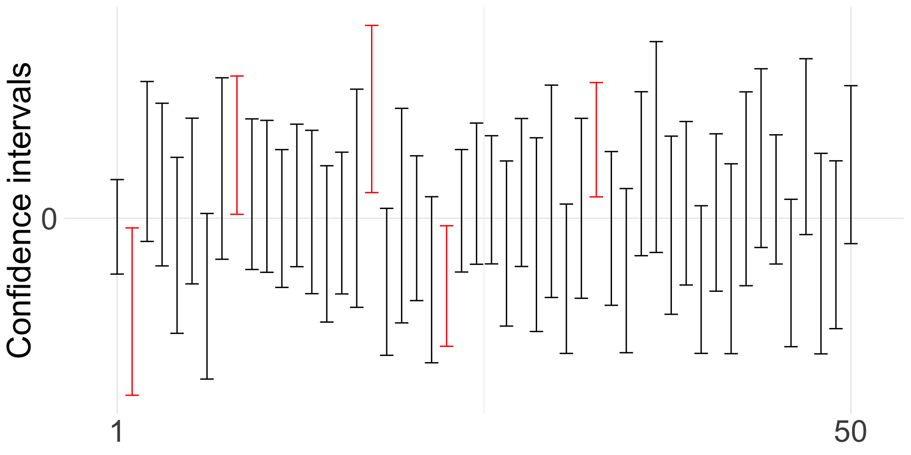
A \(100(1-\alpha)\)% confidence level implies the resulting confidence interval misses the true value of the parameter with \(100\alpha\)% of times if we were to repeatedly construct the interval.
This implies, a \(100(1-\alpha)\)% confidence interval misses the null parameter value with a probability of \(\alpha\) when the null hypothesis is true.
Type I error
\(P(\text{Type I}|H_0)\) is dictated by \(\alpha\). Thus, we can control type I errors with the specification the significance level.
A type I error occurs when we falsely reject \(H_0\) when \(H_0\) is true. The probability of type I error when \(H_0\) is true is the significance level of the test.
Type I error
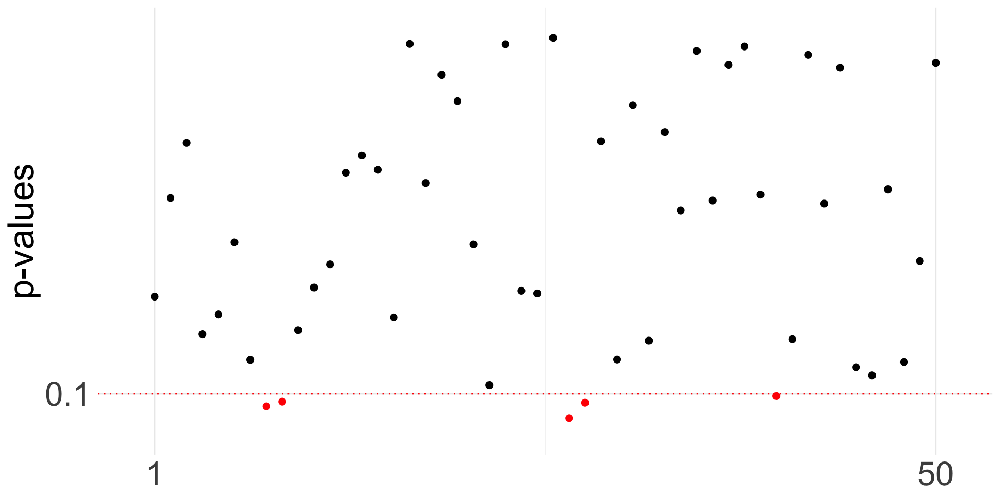
- 50 \(p\)-values simulated from a null distribution.
- At significance level of \(\alpha=0.1\), we would wrongly reject the null 5 times out of 50.
Example: Opinion poll
In a public opinion survey, Reuters/Ipsos asked the following question to 1,282 randomly selected American adults:
Overall, do you approve or disapprove of U.S. military strikes against Iran?
27% of the respondents answered they approve..
Conduct a significance test at \(\alpha=0.01\) to find out if at least one third of American adults approve of the military strikes.
Source: Ipsos
Hypotheses
\(H_0: \text{_________________}\)
\(H_1: \text{_________________}\)
Test statistic
\[T=\text{_________________}\]
Null distribution
\[T\text{_________________}\]
Example: Opinion poll
Hypotheses
\(H_0: p>=\cfrac{1}{3}\)
\(H_1: p < \cfrac{1}{3}\)
Test statistic
\[T=\frac{\widehat{p}-p_0}{\sqrt{p_0(1-p_0)\left/n\right.}}\]
Null distribution
\[T\dot\sim N(0,1)\]
since \(1282 \cdot 1/3 >10\) and \(1282\cdot (1-1/3) >10\).
\[t=\frac{0.27-1/3}{\sqrt{1/3(2/3)\left/1282\right.}} = -4.81\]
The critical value is \(z_{0.99}=-2.326\).
Example: Opinion poll
Suppose \(p=1/3\). What is the probability that they reject \(H_0\) based on another survey with \(n=1282\) participants? How about based on another survey with \(n=500\)?
Suppose \(p<1/3\). What can go wrong? What is the probability of making an incorrect inference?
Type II error
A type II error occurs when we falsely do not reject \(H_0\) when \(H_0\) is false.
Example: Speeding cars
Suppose a police officer measures the speed of cars on a highway. Her speed gun takes 3 independent measurements for each car’s speed with an error of \(N(0, 2^2).\) That is,
\[X_i=\mu+E_i,\quad\text{for }i=1,2,3\]
where \(X_i\)’s are the measurements, \(\mu\) is the true travelling speed of the car, and \(E_i\)s are measurement errors.
The device indicates that the car is travelling above 120 km/h based on a statistical test at \(\alpha=0.05\), at which point the police officer fines the driver.
Hypotheses
\(H_0: \text{_________________}\)
\(H_1: \text{_________________}\)
Test statistic
\[T=\text{_________________}\]
Critical value
\[\text{_________________}\]
Example: Speeding cars
Hypotheses
\(H_0:\mu=120\)
\(H_1:\mu>120\)
Test statistic
\[T=\frac{\overline{X}_3-\mu}{2\left/\sqrt{3}\right.}.\]
Critical values
\[z_{0.05}=1.645\]
If a car travels at \(\mu=125\), the probability of type II error is
________________________ .
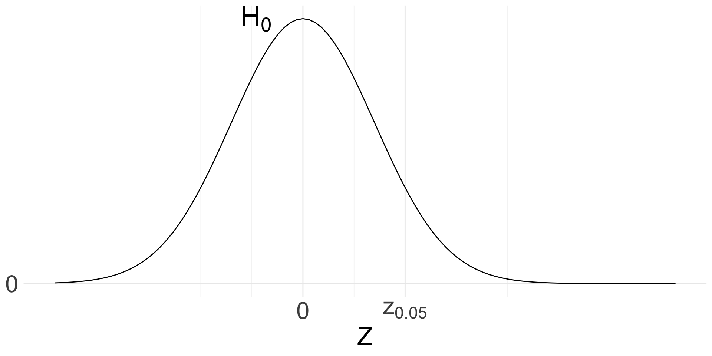
Example: Speeding cars
Hypotheses
\(H_0:\mu=120\)
\(H_1:\mu>120\)
Test statistic
\[T=\frac{\overline{X}_3-\mu}{2\left/\sqrt{3}\right.}.\]
Critical values
\[z_{0.05}=1.645\]
If a car travels at \(\mu=125\), the probability of type II error is
________________________ .
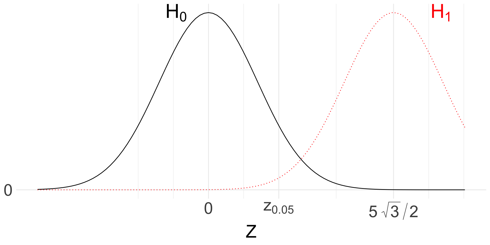
Example: Speeding cars
Hypotheses
\(H_0:\mu=120\)
\(H_1:\mu>120\)
Test statistic
\[T=\frac{\overline{X}_3-\mu}{2\left/\sqrt{3}\right.}.\]
Critical values
\[z_{0.05}=1.645\]
If a car travels at \(\mu=123\), the probability of type II error is
________________________ .
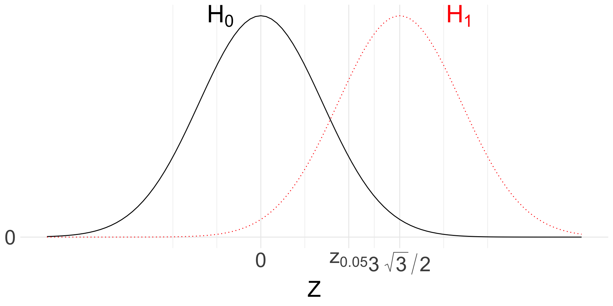
The probability of type II error depends on the true value of the parameter as well as the population variance and sample size.
Type I and type II errors
\(H_0\) is true.
\(H_1\) is true.
Reject \(H_0\).
Type I error.
Correct decision.
Not reject \(H_0\).
Correct decision.
Type II error
Type I and type II errors are errors that occur by chance when all model assumptions are correct.
Power is the probability of rejecting \(H_0\) correctly. That is, Power = 1 - P(Type II).
When model assumptions are not correct
n <- 10
J <- 50
alpha <- 0.1
t_crit <- qt(alpha / 2, n - 1)
x_bars <- numeric(J)
lwr <- numeric(J) # lower bound
upr <- numeric(J) # upper bound
for (j in seq(J)) {
x_j <- rgeom(n, .1) - 9 # a shifted geometric distribution with mean 0
x_bars[j] <- mean(x_j)
lwr[j] <- x_bars[j] + t_crit * sd(x_j) / sqrt(n)
upr[j] <- x_bars[j] - t_crit * sd(x_j) / sqrt(n)
}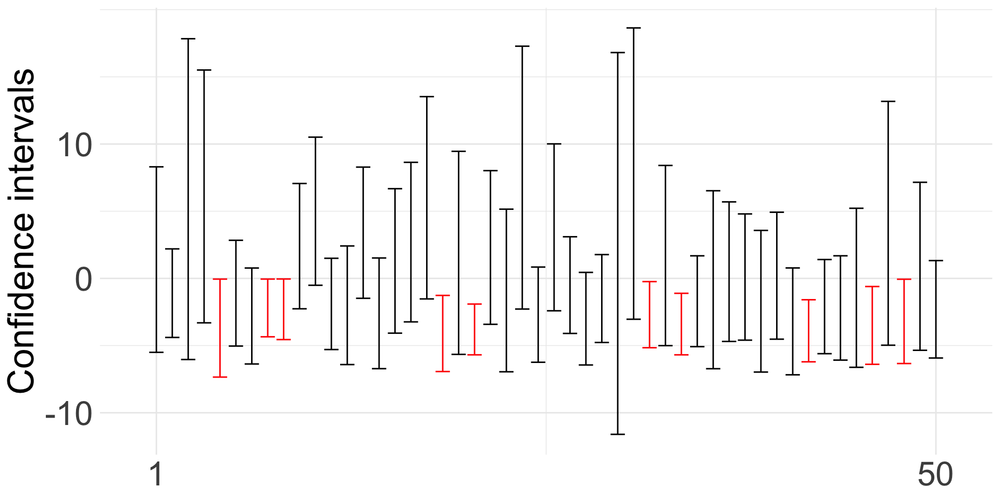
Example: Coffee sales
Pitfalls of significance testing
- The cut-off level is arbitrarily decided.
- You can achieve a smaller \(p\)-value with a large sample for even small differences. Does that mean the difference is significant?
- If observe a large \(p\)-value but a large numerical difference between the observed statistic (e.g., sample mean) and the null, does it mean the difference is negligible?
- You can consciously or subconsciously manipulate data to produce a desirable \(p\)-value.
- Using the same data to compare multiple groups requires adjustment of the \(p\)-value.
Summary
- Statistical tests, or hypothesis tests allow testing of two contradictory claims by applying statistical analysis on observed data.
- We can only reject or fail to reject the null hypothesis.
- Significance tests can result in erroneous conclusions even when all model assumptions are correct by chance.
- When model assumptions are violated, the test results may be incorrect with a higher chance.
- Reporting the \(p\)-value alone does not provide the full picture and one must pay caution when interpreting the \(p\)-value.
© 2026. Michael J. Moon. University of Toronto.
Sharing, posting, selling, or using this material outside of your personal use in this course is NOT permitted under any circumstances.